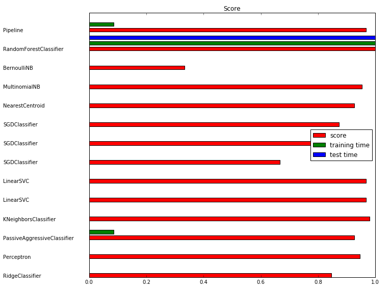

scikit-learn里面实现的所有分类器都遵循类似的形式，所以我们使用一个循环语句就可以很方便的应用多种分类器在同一个数据集上。
1 |
|
运行结果：
1 | >>> |

上面是使用稀疏矩阵存放特征的一个例子，当然普通的特征也是可以这样做的，例如，可以将上面的数据换成手写数字识别的数据。1
2
3
4
5
6
7iris = load_iris()
X, y = iris.data, iris.target
X_train = X
X_test = X
y_train = y
y_test = y
